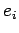
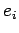
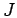
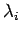
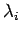
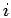
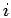
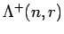

Let be even. We will apply the FRT-construction to two
endomorphisms
. In order to define them we have to introduce some notation.
First consider the involution
on  , that is
, that is
Further set if and
if  and define
and define

The first endomorphism is just the flip operator on  , whereas the second is an integer multiple of a projection
map whose kernel is just the kernel of the linear form on
, whereas the second is an integer multiple of a projection
map whose kernel is just the kernel of the linear form on
 corresponding to the canonical skew bilinear form on
(see below) and whose image is the one dimensional span of a
skew bivector. Our object of interest will be the FRT-construction
corresponding to the canonical skew bilinear form on
(see below) and whose image is the one dimensional span of a
skew bivector. Our object of interest will be the FRT-construction
According to the preceeding section it is a graded matric bialgebra whose homogenous summands
are the centralizer coalgebras of algebras  which are generated by endomorphisms
which are generated by endomorphisms
for
 . Using the notation of [We] the
Brauer centralizer algebra ( an element in
. Using the notation of [We] the
Brauer centralizer algebra ( an element in  )
is generated by symbols and  for
)
is generated by symbols and  for
 and
the assignment
and
defines
a representation of on . Thus
and
the assignment
and
defines
a representation of on . Thus  is
just the image of under this representation, in
H. Wenzl's notation from [We]:
.
R. Brauer showed in [Br] that this is just the
centralizer algebra of the symplectic group
is
just the image of under this representation, in
H. Wenzl's notation from [We]:
.
R. Brauer showed in [Br] that this is just the
centralizer algebra of the symplectic group
 acting on
if
. One of our
aims is to generalize this to the case of an arbitrary algebraically
closed field instead of .
acting on
if
. One of our
aims is to generalize this to the case of an arbitrary algebraically
closed field instead of .
Another problem, connected with the former, is
to show that the centralizer algebra
of  which will turn out
to be the symplectic Schur algebra defined by
S. Donkin in [Do2] is stable under base changes. In view of
theorem 4.3 this is equivalent to the projectivity
of the coalgebra
as an
which will turn out
to be the symplectic Schur algebra defined by
S. Donkin in [Do2] is stable under base changes. In view of
theorem 4.3 this is equivalent to the projectivity
of the coalgebra
as an  -module. For this purpose
we are going to construct a basis for the latter one.
The procedure follows [Oe]
where the more general quantum case is treated. But it will become more
transparent in the much simpler classical case. First note that there is an
epimorphism of graded bialgebras from
-module. For this purpose
we are going to construct a basis for the latter one.
The procedure follows [Oe]
where the more general quantum case is treated. But it will become more
transparent in the much simpler classical case. First note that there is an
epimorphism of graded bialgebras from
to
leaving the symbols  fixed (we use
fixed (we use  as symbols for residue classes of
in all cases of matric bialgebras).
For
as symbols for residue classes of
in all cases of matric bialgebras).
For  is just the
FRT-construction
where the relations coming from the
endomorphism
is just the
FRT-construction
where the relations coming from the
endomorphism  are omitted. This is because
just give the ordinary
commutativity relations. The kernel of this bialgebra epimorphism is the ideal
in
are omitted. This is because
just give the ordinary
commutativity relations. The kernel of this bialgebra epimorphism is the ideal
in  which is generated by the polynomials
where
. To write down
these polynomials explicitly let us fix some notation:
which is generated by the polynomials
where
. To write down
these polynomials explicitly let us fix some notation:
Setting and we obtain

Therefore we have
where
is the ideal in  generated by the set
generated by the set
in called the symplectic monoid by S. Doty [Dt] and which has been considered by D.J. Grigor'ev [Gg] first. Here  is the Gram-matrix of the canonical skew bilinear form, that is where . The function is called the coefficient of dilation. It is neccesarily a regular function on and already well defined in , explicitly:
Note that this is independent of
by the relations in
.
Furthermore is a group-like element of this bialgebra
(cf. [Oe] 2.1.1). The set
of invertible elements in
is precisely the group
of symplectic similitudes. S. Doty showed in [Dt] that
in fact coincides with the Zariski-closure of
in
. We will obtain this as an easy consequence of the results
presented below.
To write down a basis for
we need some combinatorics.
The set of partitions of is denoted by  . It contains
subsets
which consist of partitions having not more than parts.
We write partitions as -tuples
. It contains
subsets
which consist of partitions having not more than parts.
We write partitions as -tuples
 of nonnegative integers  in descending order
such that
. To each partition one
associates a Young-diagram reading row lengths out of the
components . For example
of nonnegative integers  in descending order
such that
. To each partition one
associates a Young-diagram reading row lengths out of the
components . For example
is associated to
 . The column lengths
of the diagram lead to another partition
called the dual of the partition , i.e.
.
Let
. The column lengths
of the diagram lead to another partition
called the dual of the partition , i.e.
.
Let  denote the symmetric group on symbols and
the standard Young subgroup of
denote the symmetric group on symbols and
the standard Young subgroup of  corresponding to the partition . This is the subgroup fixing
the subsets
of . In the above example
the
standard Young subgroup of corresponding to the dual
partition fixes
and .
corresponding to the partition . This is the subgroup fixing
the subsets
of . In the above example
the
standard Young subgroup of corresponding to the dual
partition fixes
and .
To each partition
 and a pair of multi-indices
and a pair of multi-indices
 one defines a bideterminant
one defines a bideterminant
 by
by
where
. These are
products of minor determinants, one factor for each column, the size
of which
correspond to the length of the column. By (13)
they can be interpreted as
elements of
, as well. We wish to
write down a basis of the latter  -module consisting of such
bideterminants. Since they are too large in number one needs a criterion
to single out the right ones. This can be done using
-tableaux. These are constructed from the diagram of
by inserting the components of a multi-index column by column into the
boxes. In the above example:
-module consisting of such
bideterminants. Since they are too large in number one needs a criterion
to single out the right ones. This can be done using
-tableaux. These are constructed from the diagram of
by inserting the components of a multi-index column by column into the
boxes. In the above example:
We put a new order on the set  , namely
.
A multi-index is called -column standard if the
entries in
, namely
.
A multi-index is called -column standard if the
entries in
 are strictly increasing down columns according
to this order. It is
called -row standard if the
entries in
are strictly increasing down columns according
to this order. It is
called -row standard if the
entries in
 are weakly increasing along rows and
-standard if it is both at the same time. We write
are weakly increasing along rows and
-standard if it is both at the same time. We write
 to denote the subset of
to denote the subset of  consisting
of all multi-indices being -standard. Such a multi-index
consisting
of all multi-indices being -standard. Such a multi-index
 is called -symplectic standard if for each
index
is called -symplectic standard if for each
index
 the occurences of  as well as in
the occurences of  as well as in
 is limited to the first rows. The corresponding subset of
is limited to the first rows. The corresponding subset of
 will be denoted by
will be denoted by
 .
.
The notion of symplectic standard tableaux traces back to
R.C. King [Ki] and it has appeard in a lot of work concerning
symplectic groups and their representation theory (for details see
[Do3]).
It is well known from invariant theory (cf. [Mr],
section 2.5) that the collection of all bideterminants
where runs through
 and
 run through
run through
 form a
basis of
form a
basis of  . Similarily we will prove in the next section
. Similarily we will prove in the next section
Before proving this let us have a look at some consequences. The first one generalizes theorem 9.5 (a) of [Dt] avoiding the restriction to characteristic zero. Furthermore, it contains corollary 5.5 (f) of that paper for algebraically closed fields.
PROOF: Let be the coordinate ring
of
and its -th homogenous summand.
In [Do2] the symplectic Schur algebra
is defined as the dual algebra to the coalgebra .
The dimension of the latter one is given by Weyl's character formula
and therefore independent of the field (cf. [Do2] p. 77).
On the other hand there is an epimorphism of graded bialgebras from
to since
is closed in
and
the latter one has been defined as the vanishing set of the ideal
by which
is defined. But by our basis theorem
6.1 the dimension of
is independent of the
field , as well. Thus, the proof can be finished looking at the
case
and using
Doty's theorem 9.5 (a) or alternately by a direct calculation of
(see proposition 7.1 below).
By theorem 4.1 we have isomorphisms
Since
has been recognized to be the
coordinate ring of
we may interpret the spectrum of
the ring
as an integral monoid scheme
. Accordingly, an integral
form for the symplectic Schur algebra can be obtained as the
dual algebra
For a field of characteristic zero this has been proved by S. Doty,
too ([Dt] corollary 9.3. (c)). It should be remarked, that the
basis dual to  together with the anti-involution defined by matrix
transposition give a cell datum for the symplectic Schur algebra
in the sense of J. Graham and G. Lehrer (cf. [Oe], 4.2.5).
Thus, its representation theory can be developed easily to the extent
of the treatment of cellular algebras in [GL].
together with the anti-involution defined by matrix
transposition give a cell datum for the symplectic Schur algebra
in the sense of J. Graham and G. Lehrer (cf. [Oe], 4.2.5).
Thus, its representation theory can be developed easily to the extent
of the treatment of cellular algebras in [GL].